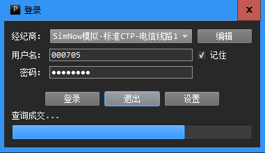

完整的PowerGate包括一个可执行的网关程序，及相应的编程语言SDK。
用户使用SDK编写交易策略，网关程序加载策略进行交易。
我们将利用PowerGate运行一个非常简单的交易策略，以此讲解它的使用方法。
安装PowerGate网关
点击此处下载PowerGate网关安装程序。
网关程序的安装过程与普通应用程序的安装过程一样，它的使用说明请看这里。
PowerGate内置支持多种交易通道，在此我们使用CTP期货模拟通道：一是因为模拟通道可以提供7x24小时服务；二是因为CTP期货通道提供每秒至少两次的Tick数据，我们可以更快地看到策略的运行结果。
安装Python SDK
点击此处下载PowerGate Python SDK。
目前SDK支持Win32 Python27。请确保电脑上已经安装了Python27，安装程序点击此处下载。
编写策略
我们编写一个简单的“均线金叉死叉”交易策略。
策略原理相当简单：以Tick数据为基础，当10周期均线上穿40周期均线时做多，当10周期均线下穿40周期均线时做空，每次均以对手价下单。（这是一个高效的‘碎钞机’，所以千万别用自己的实盘账号运行这个策略！）
打开你喜爱的代码编辑器，复制粘贴下面的代码，并以文件名“macross.py”保存，或者直接到此处下载代码。
# -*- coding: utf-8 -*-
import math
from PowerGate import StrategyBase #策略基类
from PowerGate import StrategyConfig #策略配置
from PowerGate import MA #均线
from PowerGate import Cross #均线穿越验证
class MACross(StrategyBase):
def __init__(self, *args, **kwargs):
super(MACross, self).__init__(*args, **kwargs)
self.ma_short = MA()
self.ma_long = MA()
def onStart(self):
#获取Tick最新价数据序列,Tick数据序列会被系统自动填充
self.series = self.getTickSeries().getLastPriceDataSeries()
#以Tick最新价数据序列和相应周期初始化两根均线
self.ma_short.init(self.series, 10)
self.ma_long.init(self.series, 40)
def onTick(self, tick):
#如果均线还没有可用的计算值，直接返回
#ma_short的周期参数为10，当Tick最新价数据序列被10个Tick填充时，ma_short获得第一个MA值
if math.isnan(self.ma_short[0]):
return
#ma_long的周期参数为40，当Tick最新价数据序列被40个Tick填充时，ma_short获得第一个MA值
if math.isnan(self.ma_long[0]):
return
#打印Tick及两条均线的最新值
print('CLOSE=%f MA[10]=%f MA[40]=%f' % (tick.lastPrice,
self.ma_short[0],
self.ma_long[0]))
#短均线上穿长均线
if Cross.crossAbove(self.ma_short, self.ma_long):
print('Cross Above')
#以策略订阅的主合约为标的，做多1手
self.openLong(self.getMainInstrument(), 1)
#短均线下穿长均线
elif Cross.crossBelow(self.ma_short, self.ma_long):
print('Cross Below')
#以策略订阅的主合约为标的，做空1手
self.openShort(self.getMainInstrument(), 1)
if __name__ == '__main__':
config = StrategyConfig()
#设置策略名称，每个策略必须有一个名称
config.setName('MACross')
#如果只订阅一个合约，那么该合约就是策略主合约，否则第一个订阅的合约为策略主合约
config.subscribe("rb1710")
#策略实例
strategy = MACross()
#运行策略
strategy.run(config)
#等待用户输入
raw_input()
#停止策略
strategy.stop()
运行PowerGate网关
请以CTP模拟账户登录PowerGate网关程序。如果没有模拟账户，请到SimNow网站注册。

运行策略
网关程序启动完毕，打开命令行窗口，运行交易策略：
python macross.py
策略运行时的输出如下：
[2017/05/17 19:00:26.465][I] +===============================================================+
[2017/05/17 19:00:26.465][I] * ALGORITHMIC STRATEGY ENGINE [build: May 17 2017 08:22:36] *
[2017/05/17 19:00:26.465][I] +===============================================================+
[2017/05/17 19:00:26.465][I] Engine initializing...
[2017/05/17 19:00:26.465][W] Could not load data dictionary!
[2017/05/17 19:00:26.465][I] Load timer service 'SysTimer' done.
[2017/05/17 19:00:26.465][I] Load market data service 'RemoteMD' done.
[2017/05/17 19:00:26.465][I] Load order execution service 'RemoteExec' done.
[2017/05/17 19:00:26.465][I] Total services loaded: 3.
[2017/05/17 19:00:26.465][I] Load strategy 'MACross' succeed!
[2017/05/17 19:00:26.465][I] Connect to remote engine at address 127.0.0.1:5501...
[2017/05/17 19:00:26.554][I] Trading Account Detail [SrvID: 0]:
=======================================
Account ID: xxxxxx
Balance: 1284363.160000
Realized P/L: 0.000000
MTM P/L: 480.000000
Client Equity: 1284363.160000
Commission: 0.000000
Margin Occupied: 171002.000000
Fund Avail: 988639.160000
Risk Degree: 0.000000
=======================================
[2017/05/17 19:00:26.555][I] Execution service 'RemoteExec' ready.
[2017/05/17 19:00:26.555][I] Check auto start...
[2017/05/17 19:00:26.555][I] Total runtime number: 1.
[2017/05/17 19:00:26.555][I] Strategy 'MACross' loading...
CLOSE=2976.000000 MA[10]=2975.900000 MA[40]=2975.550000
......
CLOSE=2975.000000 MA[10]=2975.700000 MA[40]=2975.725000
Cross Below
[2017/05/17 19:00:55.835][I] [MACross] Raw: Short, rb1710, 1.0, 2975, 2017-05-16 19:49:15.500, 172386781, 1
[2017/05/17 19:00:55.899][I] [MACross] Raw-Ack: Finished, Short, rb1710, 1.0, 2975, 1.0, 2975, 2017-05-16 19:49:15.500, 172386843, 1
CLOSE=2975.000000 MA[10]=2975.600000 MA[40]=2975.725000
......
CLOSE=2976.000000 MA[10]=2975.900000 MA[40]=2975.800000
Cross Above
[2017/05/17 19:01:00.851][I] [MACross] Raw: Cover, rb1710, 1.0, 2977, 2017-05-16 19:49:20.500, 172391796, 2
[2017/05/17 19:01:00.852][I] [MACross] Raw: Buy, rb1710, 1.0, 2977, 2017-05-16 19:49:20.500, 172391796, 3
[2017/05/17 19:01:00.903][I] [MACross] Raw-Ack: Finished, Cover, rb1710, 1.0, 2977, 1.0, 2977, 2017-05-16 19:49:20.500, 172391859, 2
[2017/05/17 19:01:00.904][I] [MACross] Raw-Ack: Finished, Buy, rb1710, 1.0, 2977, 1.0, 2977, 2017-05-16 19:49:20.500, 172391859, 3
等待片刻，如果均线有交叉，我们就能看到PowerGate按照策略的指示交易指定合约。在网关界面上我们能看到策略的仓位一直在翻转，因为这是一个时时在场的策略。
至此，我们已经完成了一个简单的“算法交易策略”的开发与部署。